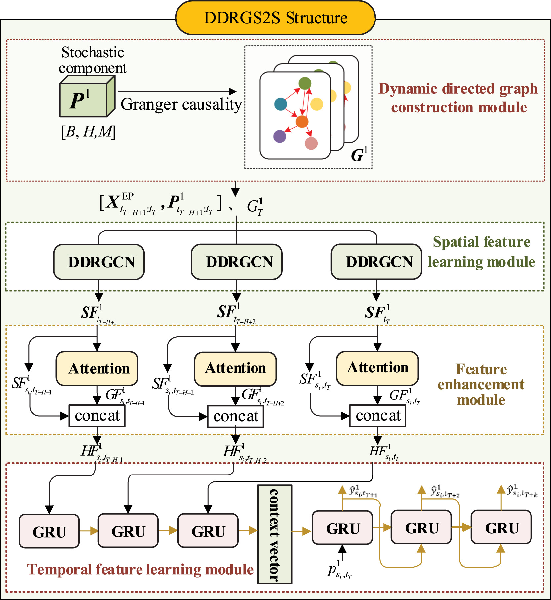
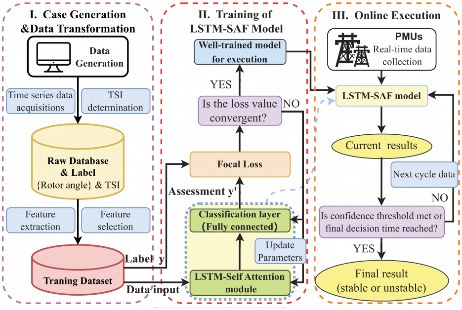

Hello, I'm Yuzhe Cao.
I am a Ph.D. student in Control Science and Engineering at Huazhong University of Science and Technology (HUST), advised by Associate Professor Renzhi Lu. I started my doctoral studies in 2026 and expect to graduate in 2030.
I graduated from HUST with a bachelor's degree in Artificial Intelligence in 2024, and pursued graduate studies in Control Engineering from 2024 to 2026. During 2025–2026, I worked as an algorithm intern at the Central Research Institute of Huagong Tech (华工科技).
My research interests include diffusion models, time series analysis, and reinforcement learning. For research discussions and collaboration, please contact me at yzcao@hust.edu.cn.
Recent Updates
Academic Background
Ph.D. in Control Science and Engineering
Huazhong University of Science and Technology
Advisor: Associate Professor Renzhi Lu · Expected graduation: 2030
Graduate Studies in Control Engineering
Huazhong University of Science and Technology
Bachelor's Degree in Artificial Intelligence
Huazhong University of Science and Technology
Research Publications
Google Scholar
DDRGS2S: A novel spatiotemporal correlation-based deep learning model for wind power prediction
Yuzhe Cao, Xuefei Huang, Jing Liu, Defu Cai, Yuemin Ding, and Renzhi Lu

A Novel Data-Driven LSTM-SAF Model for Power Systems Transient Stability Assessment
Zonghe Shao, Qichao Wang, Yuzhe Cao, Defu Cai, Yang You, and Renzhi Lu
Industry Experience
Algorithm Intern
Central Research Institute, Huagong Tech （华工科技中央研究院）
Professional Activities
- Conference reviewer
- AAAI Conference on Artificial Intelligence (AAAI)
The ACM Web Conference (WWW) - Journal reviewer
- IEEE Transactions on Consumer Electronics (TCE)
IEEE Transactions on Cybernetics (TCYB)